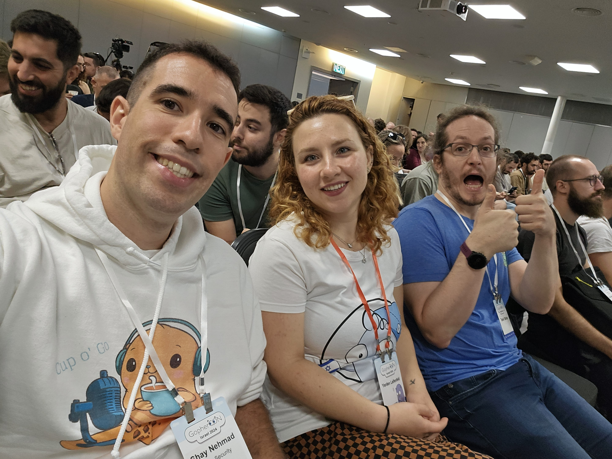
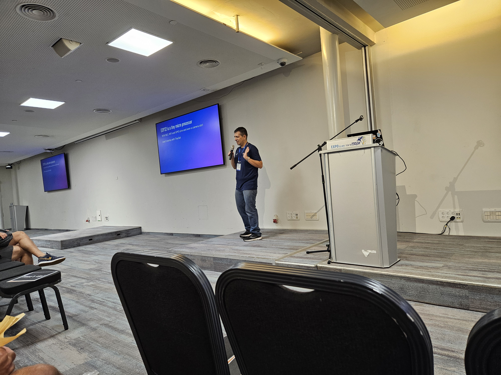
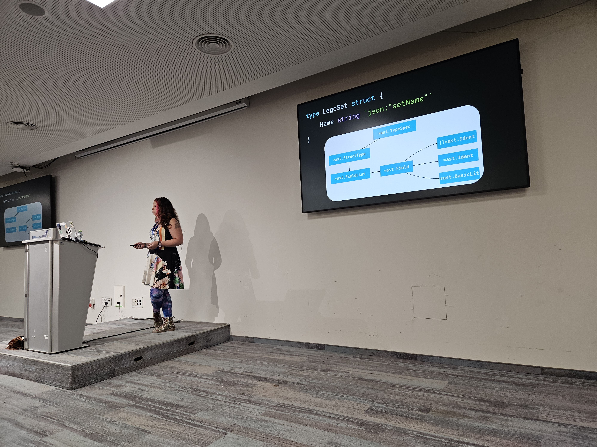
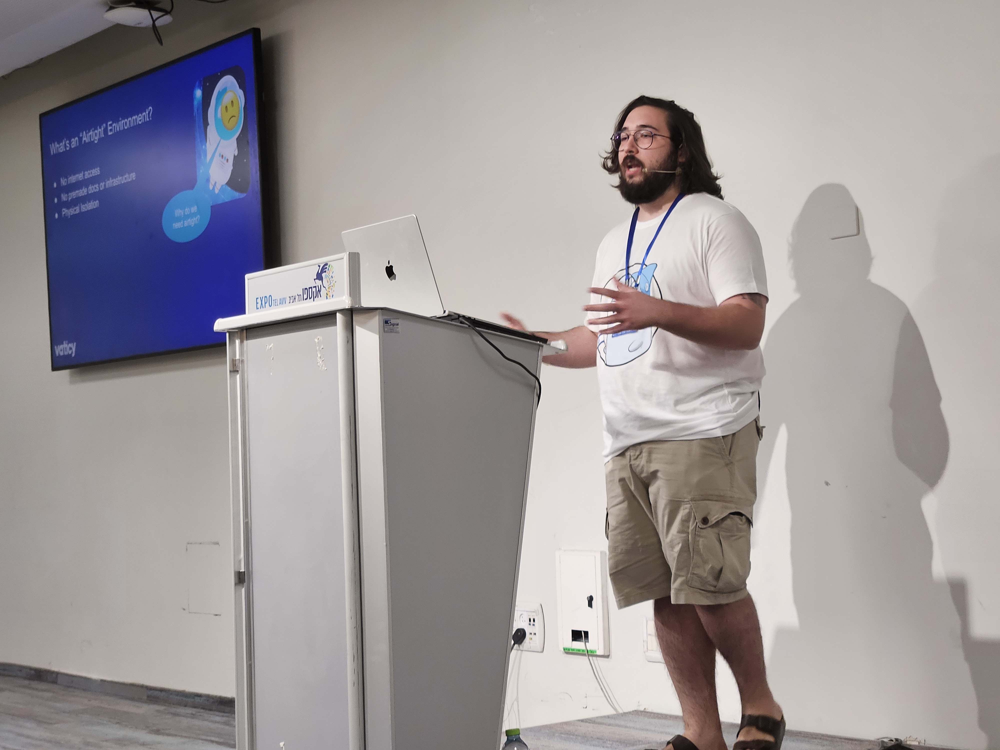
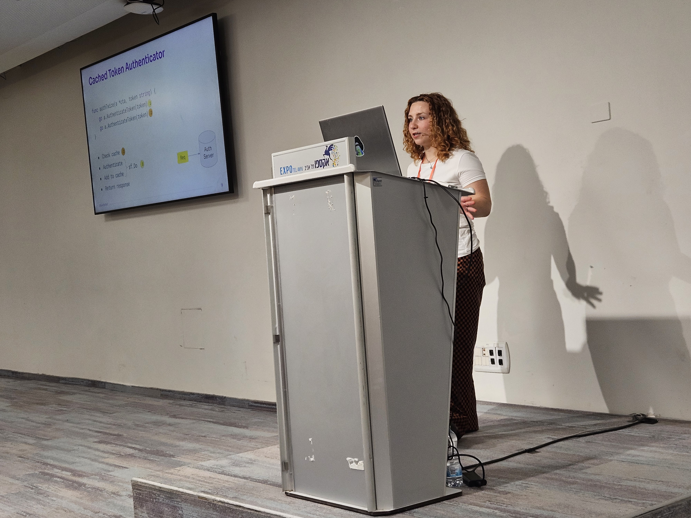
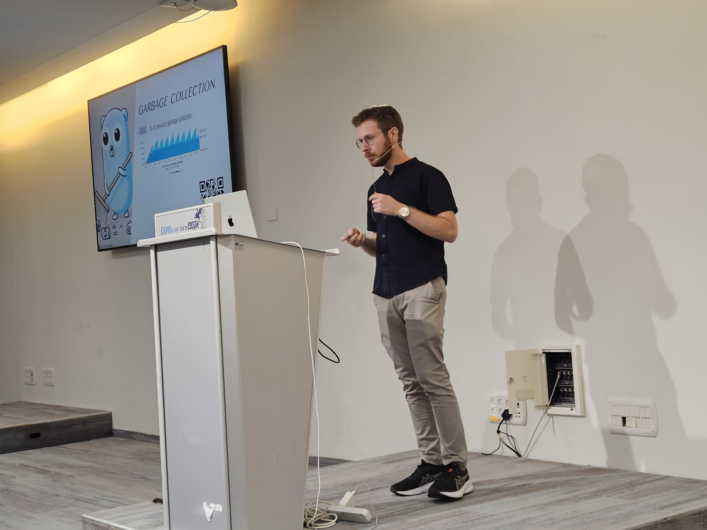
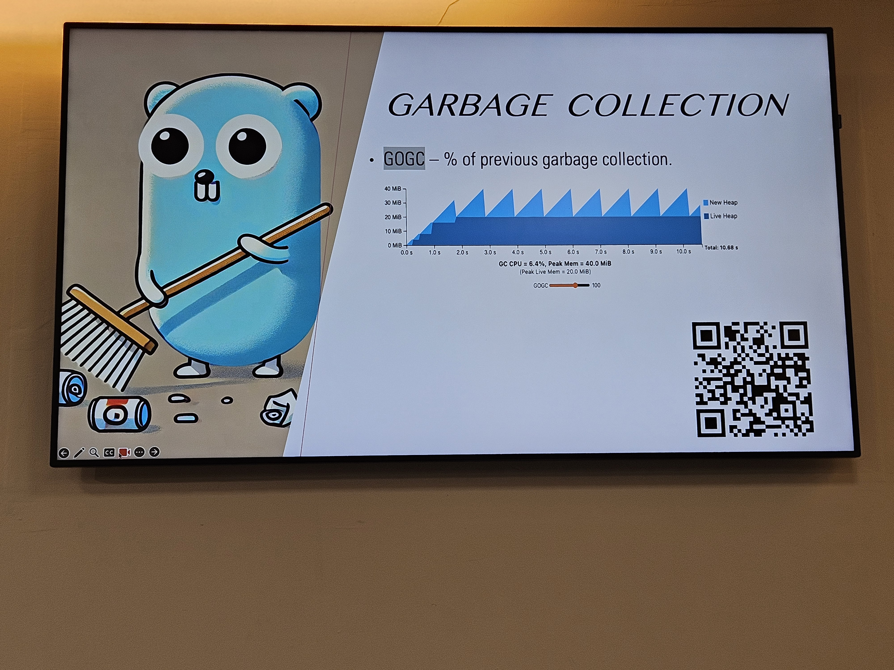

GopherCon Israel 2024
GopherCon Israel 2024! What a fun day.

Started by seeing lots of familiar faces! Miki Tebeka, Yarden Laifenfeld, Liri Sokol, Guy Brandwine, Itamar Knafo, Ran Bar-Zik and more. It’s a lot of fun knowing people and saying hi to everyone, and meeting new people, too.

I arrived there and met some people from Orca Security (where I work right now). These are my raw notes from the event, not too much editing, mostly for my peeps from Orca’s Golang Guild. 🐋
The event had two tracks so I missed the following talks (but I hope they’ll be) on YouTube soon:
- Go Data! An Unorthodox Choice for Data Processing by Amir Halatzi
- Building AI Agents with Go: A Practical Guide by Yoni Davidson
- Leveraging Profile-Guided Optimization in Go for Peak Performance by Nitin Rathee
- Implementing Fault-Tolerant Async Flows in Distributed System by Tal Benyunes
Opening words by Miki Tebeka
- Thanks to the sponsors - AppsFlyer, Tenable, Google, descope, Island, RedHat
- Swag money is for charitable donations! That’s cool.
- CoC: Be nice, try to avoid politics and have a bit of escapism.
- Social Media: @gopherconil on Twitter
Keynote - Ran Bar-ZiK - take Go to the smallest scale

TL;DR: IoT is fun, educational, and profitable. You can use Go to connect to sensors, and it’s pretty easy and cheap. There are a ton of fun projects and keeping the “creative spark”/“mischief managed” vibe is a skill within of itself.
Intro
- “I keep all my dad jokes in a dad-a-base”
- Usually we’re talking about scaling up, small scales are usually not interesting
- Ran is from CyberArk, and they work with Go (and also Python)
- Weekly blog post at internet-israel.com
- Author of hebdevbook.com
01. What is IoT?
- Three types:
- Buy everything: Connect everything to Alexa
- Build everything: Everything from scratch
- Hating everything: Nothing smart at my home
- Why?
- Fun
- Educational
- Profit
- Skills - become multi-disciplinary programmer
- How?
- Basically, connect some pins, input-output, and send some commands.
- Today, no need to solder, no need for C: You can write with Go!
- Example projects
- Talking plant
- Turn off the internet when the laundry basket is full
- Full trashcan -> Telegram message
- Play all of Star Wars on a small LED
02. What is Raspberry Pi
- Setup:
- Copy OS to SD card
- Power the RPi
- SSH - connect to it remotely
- It’s linux, so super simple to install Go
- How to connect to the GPIO and other interfaces?
- Periph.io: https://periph.io/
- Sensors - can connect to multitude of sensors, but need to buy the hardware.
- RPi is great but costs 500₪
- It’s not suitable for every project (RPi needs power).
03. Arduino - The educational IoT
- Microcontroller
- Welcome to the embedded world, no Linux or other OS here. Need to compile my code into embedded.
- To work with Go, you can use TinyGo, even though the native is C++ native.
- Arduino has simulators and playgrounds
04. ESP32 - costs 4$
- Tiny micro processor - BLE, WiFi, GPIO, and even a Camera Slot.
- It works with TinyGo!
- Connect to sensors, can create a network or be a bridge (MQTT - pubsub)
- Can connect to other machines
- It’s common to have a network of MQTT that sends messages
Ran’s talk summary
- IOT is for everyone!
- It’s pretty easy and pretty cheap.
- Ideas for projects:
- Work
- Small IOT device for Orca that yells the name of a failed build in the room whenever the build fails
- Office air quality sensor -> into Slack message about Code Review quality
- Home
- “Please water me” reminder for the second floor pots (with solar powerage)
- Work
Go Generate some code with Liri Sokol

TL;DR: Code generation is a powerful tool in Go, and it’s built-in. There are
three main strategies for code generation: string builders, code parsing, and
templates. Liri showed us examples of go:generate in action; I want to try
it now!
What is Code Generation?
Take a developer, Coffee in, Code out. We want something a bit more deterministic - output should be executable, correct code, etc.
- Warmup problem:
- Translate consts
iotawith a map to user facing error codes - What do we do when we need to add a new error code? Need to remember to add the error string
- Write a Go program that writes code - at first, it’s pretty simple with string outputs and regex lookups.
- Note to self: this seems… suspicious - what promises that I don’t generate errors? Code injection? Etc.?
- Liri says this is not good, and we need to look at the code structure
- How do we run this command?
//go:generate ...- Benefit - this is built-in to Go
- Go directs us towards using
//go:generateto make up for the language’s shortcomings - In go’s own source code there are 83 usages of go:generate directives.
- Should we check-in generated code?
- There’s no single answer
- Pros: but there’s a lot of benefit of checking the code in (for other tools to review or to make the code readable without running anything)
- Cons: Code that can be deterministically generated doesn’t REALLY need a reason to be created
- What types of code generation tools exist?
- [[Code generation strategy: String builder]]
- [[Code generation strategy: Code parsing]]
- [[Code generation strategy: Templates]]
- Code parsing
- Given this code, how can we generate the “ToString” function using Code Parsing libraries?
- Translate consts
type ErrorCode int
const (
ErrorUnknown ErrorCode = iota
ErrorMissingTile
ErrorSteppedOnTile
)
Code Generation Strategies
Using libraries like ast we can write the code that can parse and generate code. The generator is complicated, but gives a lot of type safety.
- The tradeoff - the code is not very manageable
- How to overcome the tradeoff - generate the code that generates code using LLMs
- “Why not have LLMs write the string function” - it’s less deterministic and harder to maintain
- For this specific function
//go:generate stringer -type=ErrorCode- Nice trick!
- Input is built with [[Code generation strategy: Code parsing]] , Output is generated with [[Code Generation Strategy: String builder]]
How to mock in Go
testify/mock, but the code is very boilerplate-i and hard to maintain - what happens when we change the original interfacemockery- plays nicely withtestify/mockand autogenerates the code.- How does it work? [[Code generation strategy: Templates]]
- Uses
text/templates under the hood. - Go Templates let us render strings with a “smart”-er templates and type safety.
text/templateis a very strong and recommended library (part of the STD)
- Uses
Example: OpenAPI
- We can use this to generate code from OpenAPI spec
- Liri recommended
ogen-go/ogen- Thought: interesting to see how it compares to
oapi-codegen/oapi-codegen.
- Thought: interesting to see how it compares to
- This is not a “specific issue” which is why we don’t need to generate it
- ogen has big template files: https://github.com/oapi-codegen/oapi-codegen/blob/main/pkg/codegen/templates/stdhttp/std-http-middleware.tmpl
- Protobuf also relies on Code Generation
Liri’s talk summary
- The code generator itself doesn’t have to be written in Go.
OpenAPITools/openapi-generatoris written in Java. It also uses [[Code generation strategy: Templates]] (with Mustache)- Why is Go good for this?
- Great library support
- Very simple language
- One way to solve every issue
- Why is Go good for this?
Go in air-gapped environments - Itamar Knafo

TL;DR: Air-gapped environments are environments without internet access. This is challenging for Go developers because of the Go Proxy and the Go Module system, but there are solutions. There are softer challenges, too, like onboarding new developers to Go in an air-gapped environment.
- The Story
- Worked a lot with K8s and Cloud CNCF, wrote Go, in an air-gapped environment
- What is air-gapped env?
- No internet access, there’s no infra, and there’s physical isolation
- Why air-gapped?
- For example:
go get, how does that work?proxy.golang.org- no such host. Where do we start?go env- has a lot of related issues- The obvious “solutions”
go mod vendor- not good, that’s how Node works, has a lot of downsides- Develop Go in the internet, and move the binaries in - not good enough, moving binaries into air-gapped environments
- The Go Proxy and its implications
- Central point for module dist
- GOPROXY
- GOSUMDB - cross reference version and content
- Modules and dependencies: go.mod, go.sum, and code.
- Need for local module mirrors
- Versioning and updating deps
- So how to solve?
- Self hosted go proxy/registy: Athens.
- Internal Tooling:
- Fetching go modules
- Uploading go modules
- Custom CI/CD processes
- Need to bring in supply-chain security
- Develop internal tools to replace internet dependent functionalities.
- How to overcome onboarding challenges
- Need to create an internal Golang Community
- Similar to meetups
- Sharing knowledge
- Need to create an internal Golang Community
Go Sync or Go Home with Yarden Laifenfeld

TL;DR: Go has a lot of built-in concurrency primitives that are advanced and powerful for building multi-threaded applications.
- Go or Rust? It depends.
- Go is very good for concurrency because it was a high priority.
- Relevant libs: std
syncand the experimentalx/sync. Useful features:- mutex
- once
- pool
- rwmutex
- waitgroup
- (and more, need the slide from Yarden)
- context.Context
- Context are created from other contexts
- Child contexts will get cancelled
wg := sync.WaitGroup{}
for _, conn := range conns {
wg.Add(1)
// do the thing
}
wg.Wait()
- Cool features:
- WaitGroup vs. ErrGroup
- ErrGroup seems very ergonomic for error handling stuff
egCtx := errgroup.WithContext(ctx)
- ErrGroup has other useful features like SetLimit, TryGo VS Go
- We’ll use ErrGroup when we use a WaitGroup and there’s an internal error somewhere
- ErrGroup seems very ergonomic for error handling stuff
- janos/SingleFlight
- Duplicate function call suppression mechanism
- First implementation - naive cache, but is vulnerable to race conditions
- To resolve - use SingleFlight - has a
Doin agroup.- Will cause single call that’s thread-safe. Nice trick!
- Cool feature: DoChan returns immediately with a
chanwe canselecton, so we can, for example, wait on the channel AND our current - With generics: Tailscale!
- sync.Cond - wait on a condition
- Features: Wait, Signal, Broadcast
- For many simple use cases - channels are better (according to the docs)
- WaitGroup vs. ErrGroup
- How to discover packages?
- pkg.go.dev
- Can see how many people import a specific library, and see examples by clicking on “Imported By”.
- github.com
- Can also find examples of how other people use a specific library/API, which is useful!
- pkg.go.dev/std
- pkg.go.dev/golang.org/x
- pkg.go.dev
Memory illusions: how memory ruins benchmarks by Shoham Baris from imubit


TL;DR: Memory management is hard, and it’s even harder when you’re trying to do benchmarks. There are a lot of tools to help you debug memory issues, and you should be aware of the OS internals, too. Also, premature optimization is the root of all evil.
- How it all started
- Scale up an AI service to 1m rows
- Somehow, the benchmark for 1 million was smaller than 30 rows (somehow)
- How?!
- Garbage collection, maybe?
- Twitch blog post
- % of heap -> trigger GC
- How to prove this is the issue? Cool debugging tools
GODEBUG=gctrace=1- how much of the runtime is GC? How often it happens? etc.- Run tests with
-traceand usego tool trace - mmu can show us how much time is “our” time and how much is runtime time
- The Ballast (Nahum Takum)
- Allocate big chuck of useless data ahead of time
- Isn’t it wasteful? No, need to understand how mem allocation works: with
mmu, Memory Management Unit. The OS doesn’t immediately gives us all the memory, and we don’t immediately return it (scavanger)- There is
GOMEMLIMITandGOMEM-LOWERLIMITto help with this
- There is
// The scavenger's primary goal is to bring the estimated heap RSS of the
// application down to a goal.
- Interesting notes about the results
- Smaller slices etc don’t trigger allocations (there’s prealloc of small memory, which makes sense)
- Hard to decide how big the Ballast needs to be - depends on applicative needs.
- We reviewed some memory OS internals - specifically hugepages which was a nice overview but not Go-specific.
- Go specific implementation notes for hugepages
- Go looks for empty spots in pages from the beginning makes them denser
- When hugepages support was dropped in 1.21, all the optimizations were kept
- OS support because transparent huge pages - even if we (the application) don’t ask for that.
- Go suggests changing a few settings:
/sys/kernel/mm/transparent_hugepage
- https://tip.golang.org/doc/gc-guide#Linux_transparent_huge_pages
- Memory layout impacts machine performance (reading different pages) - allocation impacts speed
- This is hard to debug
- We can use perf/valgrind tools to see the cache hits (this is not really different from C at this point)
- Not super deterministic - depends on CPU state etc.
- Conclusions
- When benchmarking, use Ballast in test (and maybe in prod)
- Play with hugepage config
- Don’t do premature optimizations, or optimizations that are machine-dependent (overfit to the benchmarks).
- Know the OS internals
- Benchmark on more situations
- Real data
- Make sure you benchmark multiple scenarios
- Production profiling instead
How Go tests go test by Rotem Tamir from Ariga
Summary: This was super cool! Really useful for testing CLI tools. It definitely feels like the “right way” to do it - very balanced between pragmatic and well designed.
- How Go (the project) tests the
goCLI - Maintaining two projects: Ent and Atlas.
- How to test CLI tools in Go? Motivation - cover Atlas with tests.
- Quadruple A for CLIs
- Arrange
- Filesystem, env vars
- Act
- Set flags, STDIN, Exec
- Assert
- Consume streams
- Side effects
- …And Cleanup after
- Arrange
- Go history
- 2012-2015: test.bash - hugh bash script
- 2015: Small Go framework (testgo)
- pros: Easier to write than bash, portable, can use
-run, can run in Parallel, and the rest ofgo test’s features
- pros: Easier to write than bash, portable, can use
- 2018:
script_test.golittle scripts, specific DSL- https://go.dev/src/cmd/go/testdata/script/test_badtest.txt
- Each script becomes a Go sub-test (like table tests), so they can be selected with
-run. - Tests are isolated, and can run in parallel.
- File system initialized with the files in the
txtfile
- https://bitfieldconsulting.com/posts/test-scripts
- Live demo :)
- Tons of cool features, and it really looks super simple, including extending it with custom commands.
- Need some tiny setup in the
TestMain, callingtestscript.Runin aTestScriptfunction, and from there: it’s all in thetxtarformat (which is very easy to understand).
- Impact
- testscript is used widely to test the
atlascodebase, which is cool.
- testscript is used widely to test the
The Death of Inheritance by Aviv Carmi
I unfortunately zoned out at this point since I had a few urgent Slack messages to answer, but I did catch the link to Aviv’s blog post on the topic and a few main messages:
- https://avivcarmi.com/
- Composition vs. Inheritance
- Three steps to learn how to come from OOP heavy langs to Go
- These are good notes for when I need to “convert” someone to Go from Java, Python, C#, etc.
- Inheritance is “cleaner” by the books but practically it’s a mess.
- The blog
Conclusion
This event is always fun, and this time was no exception. Since I’ve been doing Cup o’ Go for a while now, this was a great opportunity to meet some of the people I’ve interviewed in person and even listeners of the podcast. I’m looking forward to the next one! Hopefully next time I’ll be able to give a talk, too. :)